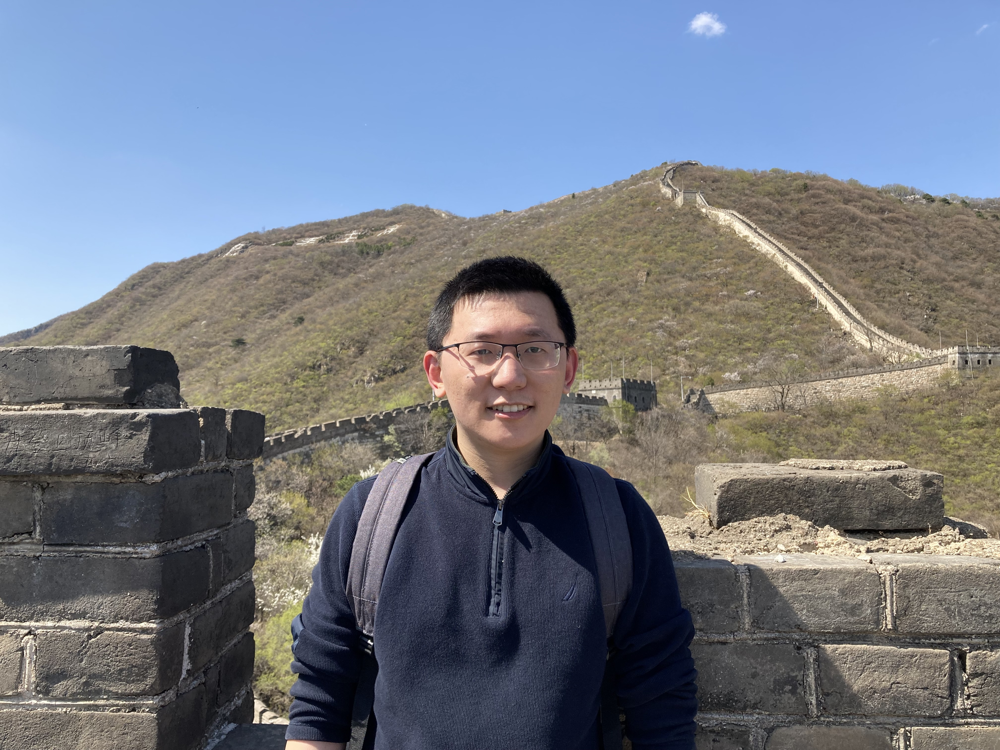

Liyuan Cao
|  | Liyuan Cao (曹立元) |
I am a postdoctoral researcher at BICMR, Peking University. My research interests are in numerical analysis and data science, particularly nonconvex and derivative-free optimization.
Links
Education
Ph.D., Industrial Engineering, Lehigh University, Bethlehem, PA, USA, 2016–2021
M.S., Industrial Engineering, Lehigh University, Bethlehem, PA, USA, 2014–2016
B.E., Mechanical Engineering, Nanjing University of Aeronautics and Astronautics, Nanjing, China, 2010–2014
Employment
Boya Postdoctoral Researcher, Peking University, Beijing, China, 2021–present
Teaching/research assistant, Lehigh University, Bethlehem, PA, USA, 2016–2021
Intern, Robert Bosch LLC., Sunnyvalue, CA, USA, April–August 2019
Givens Fellow, Argonne National Laboratory, Lemont, IL, USA, May–August 2018